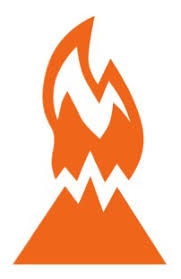

Rovdjuren är en av våra två äventyaravdelningar.
Det här är höjdpunkten som scout, och mycket tävlande,
både inom avdelningen och mellan olika avdelningar kommer att ske under de tre åren här.
Det är även dags att gå på utfärder utan ledare,
och börja organisera och planera vissa av sina egna aktiviteter.
Möten är på tisdagar, kl 18:30 till 21:00.
Om du är intresserad kan du maila avdelningsledare Anders på förnamn.efternamn@sanctamaria.se.
